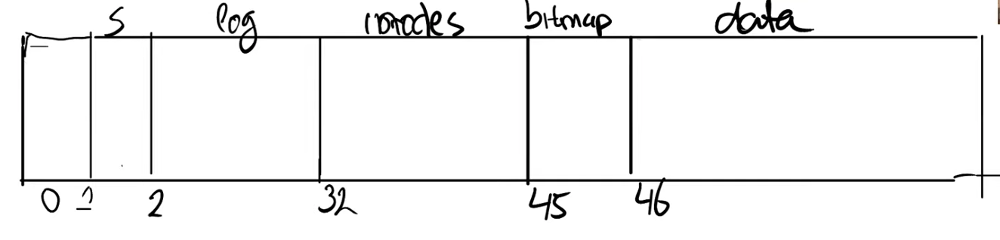
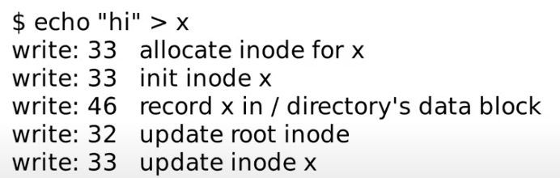
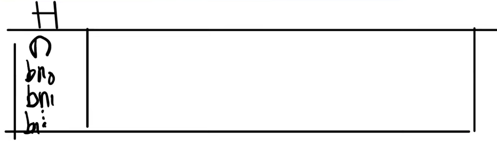

xv6 Operating System — File System
Why interesting
- 文件系统可以提供用户友好的文件名，可以帮助用户组织管理文件
- 根据文件名可以实现多用户和多进程之间更为简单的共享
- 存放于硬盘的文件具有持久化的特性
- 文件系统是硬件的一个抽象
- 计算机崩溃后，保证文件的数据的安全和重复使用，实现Crash safety机制
- 对硬盘进行分区，布局文件系统
- 访问硬盘的速度十分缓慢，采用block cache缓存技术实现性能的提升
File System Layers
| Layer | Description |
|---|---|
| File descriptor | 文件描述符。 |
| Pathname | 路径层。 |
| Directory | 目录层。 |
| Inode | Inode是存储于Disk中的数据结构，负责记录一个文件的元数据。该层实现了read/write。 |
| Logging | 为了保证持久性，是日志层。 |
| Buffer cache | 利用局部性原理，将经常调用的文件存储cache中，提升系统性能。 |
| Disk | 磁盘层，是物理层，用于保存实际的文件，以二进制的方式存储数据，文件系统会对其进行初始化。 |
文件系统的核心数据结构是 inode 和 file descriptor。接下来的笔记中，自底向上的解释不通层的作用和工作原理。
Disk Layer
Disk一般被分为大小一样的sector。Sector是磁盘驱动读写的最小单元，过去通常是512B。Block是在操作系统下，文件系统视角下的硬盘的读写最小单元，XV6中的大小是1024B。所以XV6中一个block对应了两个sector。
从文件系统的角度来看Disk，可以把它当做一个巨大的以block（1024KB）为单位的数组。
| Block Range | Description |
|---|---|
| Block 0 | Boot block |
| Block 1 | Super block |
| Block 2 - 31 | Log |
| Block 32 - 44 | Inode |
| Block 45 | Bitmap |
| Block 46 to Block N | Binary Data |
Boot Block：用来存放启动操作系统的代码
Super Block：存放了构建文件系统的相关信息
Log： Super block中定义的Log块，日志功能
Inode：存放文件的Inode数据。XV6中，一个Inode有64字节
Bitmap：记录了数据block是否空闲，0位空闲，1为使用
Binary Data：真正存放文件的block区域
Buffer Cache
Buffer cache主要有两个作用：
- 同步不同CPU或者进程对于disk block的访问，确保在内存中只有相应block的一份拷贝以及一段时间内只有一个内核线程使用它
- 缓存经常使用的block，降低读写磁盘的频率，提升系统的性能
XV6中，实现buffer cache的代码在 bio.c
中。具体关于bio.c 的源码分析可以详见：
改笔记中的Lab Locks详细解释了bio.c的源码，以及如何优化，提升并发性能。
Log
Log是为了crash safety而必要的存在，具体对于log和crash safety的关系解释在笔记：
Inode
Inode是存放于Disk相应区块中，用于索引一个文件的元数据头。它是一个64KB大小的数据结构。通常来说，inode的设计如下图表格所示：
| type | 标明该Inode指向的是文件还是目录 |
|---|---|
| nlink | 记录有多少文件名指向当前的inode，用于实现hard link 和 soft link的元数据 |
| size | 记录文件的大小 |
| direct block no 0 | 存储block的块号，对应的块中存储文件数据，每个编号4个字节 |
| … | 有12个direct block no |
| direct block no 11 | |
| indirect block no 12 | 存储block的块号，对应块中存储了direct block no，存储了256个 |
根据direct block和indirect block的数量，就可以计算出该文件系统一个inode可以存储文件的最大容量
\[ FileCapacity = DirectNumber\times 1KB + InDirectNumber\times256\times1KB \]
XV6中12个direct block，1个indirect block，计算出来可以存储文件的最大容量为268KB。
Directory
文件系统的炫酷特性就是具有层次化的命名空间。目录在XV6中本质也是一个文件，每一个目录文件包含若干条directory entries。每一条entry都有固定的格式：
- 前两个字节包含目录中文件或子目录的inode编号
- 接下来的14个字节包含了文件或者子目录的名字
假设此时要查找/y/x 文件，首先从root
inode开始查找。通常root
inode会有固定的inode编号，在XV6中，这个编号是1。我们该如何根据编号找到root
inode呢？inode从block 32开始，如果是inode1，那么必然在block
32中的64到128字节的位置。所以文件系统可以直接读到root inode的内容。
对于路径名查找程序，接下来就是扫描root
inode包含的所有block，以找到“y”。该怎么找到root
inode所有对应的block呢？根据前一节的内容就是读取所有的direct block
number和indirect block number。
Pathname
Path
name的查询包含了一系列的dirlookup函数调用，每一次调用查询一个path
name的子目录。namei根据路径返回与之对应的inode。函数nameiparent在path的最后一个元素前停止查询，并且返回这个目录的inode，把最后一个元素复制到name变量中。两个函数都调用了namex完成实际的工作。
namex首先决定路径评估从哪个地方开始。如果路径从‘/’开始，那么评估就从根路径开始。否则就从当前路径开始。假设我们要寻找路径为/a/b的文件，首先从根目录开始，iget函数获取了根目录的inode。进入while循环，调用skipelem函数进行判断，skiplelem函数将path变为b
。锁住根目录的inode的lock，判断当前的inode是不是指向了一个文件夹；如果不是文件夹，返回错误；检查调用它的是不是nameiparent函数，如果是且path为空，则早停并且返回ip；调用dirlookup函数
dirlookup函数接受三个参数（inode，name以及poff），在当前情况下，调用了skipelem之后，name保存的值是a。首先检查当前的inode指向的是不是文件夹，不是的话触发panic。如果是，遍历对应block之下的directory entry。找到对应的名字，与输入的名字进行比较；如果相同，设置poff为当前的off，获取当前directory entry的inode号码，返回前调用iget。
得到了对应文件夹的inode，赋值给next（如果next为0，说明dirlookup函数发生错误）。继续循环，直到循环结束。此时就可以找到文件b对应的inode。
查询路径的过程中也会遇到并行运算的挑战。
- 风险一：当一个内核线程在查询一个路径时，另一个内核线程可能会通过取消链接文件夹的方式修改directory
tree。这就会导致查询的内核线程可能在搜索一个已经被其他内核线程删除的文件夹，并且对应的block已经被其它文件夹或文件利用了。Xv6通过加锁的方式避免了这个风险：当在
namex执行dirlookup函数时，查询线程会hold当前文件夹的锁，而且dirlookup函数返回inode是用的iget函数。iget负责增加inode的reference count。只有namex从dirlookup中收到inode之后，才会释放当前文件夹的锁。这时候，尽管其他线程可能取消对应文件夹的链接，但reference count仍然大于0，不会被删除。 - 风险二：死锁问题。当next指向的下一个inode和当前的ip相同时（查询
“.”会出现这个问题），在释放ip的锁前给next加锁会导致死锁。为了避免死锁，namex会在获取next的锁前释放当前的文件夹的锁。
File Descriptor
Unix一个很酷的方面就是它把所有的资源看作文件，包括console、pipes等一些硬件软件资源。File
descriptor
layer实现了这种资源文件化的统一性。Xv6给每一个进程分配了一个记录打开文件的table（即file
descriptor）。每一个打开的文件用结构体struct file
表示。每次调用open
系统调用的时候就会创建一个新文件（新的struct file
）。当不同的进程打开同一个文件的时候，会根据对应的进程的table创建不同的文件实例，根据自身当前文件描述符的数，创建一个新的文件描述符。
比如A进程的0，1，2文件描述符代表着标准输入、标准输出以及标准错误，那么想要打开文件X的话，就要创建一个文件描述符为3的。
如果B进程同样要打开文件X，但是B文件已经有5个文件描述符，那么就要创建一个文件描述符为5的，因为0，1，2，3，4被占用了。
所有打开的文件都被记录在一个全局的file table里。File
table可以使用filealloc函数分配一个文件，使用filedup创建一个复制的reference，使用fileclose函数释放一个reference，使用fileread和filewrite进行读写操作。
What is File System Crash
File System Crash是指计算机在运行过程中，涉及到大量的磁盘读写操作，如果在某些操作之间，计算机因为故障死机或者断电，会导致系统崩溃，此时文件系统会因为未能原子性的完成某种磁盘读写而产生了不一致性，导致再次开机时，文件系统处于一种bad的状态，甚至无法使用。下面是一个系统crash的例子：
首先可以再回顾一下文件系统的磁盘排布方式：

Log block就是我们想要存储日志的地方。
当我们创建文件的时候，比如写一个
echo “hi” > x指令，目的是在根目录下创建一个x文件，在x文件中写入hi。涉及到了磁盘交互过程是：
假设crash发生在
init inode x和write 46之间，会发生什么呢？首先已经在inode block上分配了一个inode并且完成了初始化。但是还没有对x目录block进行修改，就crash了，说明分配好的inode不属于任何文件夹。这就导致系统重启之后找不到也无法删除。如果把
write 46 + write 32和write 33 + write 33换一下位置呢，会解决问题吗？显然如果在
write 46 + write 32和write 33 + write 33之间发生crash的话，文件夹里记录到的是没有分配的inode。这个没有分配的inode会被别的文件操作识别到，划归到其他文件夹中。但此时，根目录文件还是可以访问到这个文件的，这不利于文件的安全性。
Crash Safety
Crash Safety是解决File System Crash问题的文件系统层面的方案。一个很通用的解决方案就是采用logging系统，logging确保了操作可以在操作系统crash和重启前能恢复文件系统的统一性。
Logging
文件系统中的log块的布局如下：
最开始有一个header block，里面包含了：
- 数字n代表有效的log block数量
- 每个log block的实际对应的block编号
之后就是很多个block的数据。
文件系统运行时，内存中会有一份header block的拷贝。如果某一个log block需要读写，那么也和平常的block一样会存在于cache当中。
Logging系统的思想是很直观的，一般一个完整的logging流程是
- log write
- commit op
- install log
- clean log
Transaction
有一个需要提前了解的概念就是Transaction，即事务。事务确保了操作的安全性和原子性，和数据结构中的事务类似。在做一些磁盘操作的时候，必须以begin_op()和end_op()作为事务的开始和结束，这两个函数确保完成了logging的完整流程。在begin_op()之后的代码，并不会实际的更新磁盘内容，在end_op()之前，不会有实际的改变。begin_op()的代码如下：
// called at the start of each FS system call.
void
begin_op(void)
{
acquire(&log.lock);
while(1){
if(log.committing){
sleep(&log, &log.lock);
} else if(log.lh.n + (log.outstanding+1)*MAXOPBLOCKS > LOGSIZE){
// this op might exhaust log space; wait for commit.
sleep(&log, &log.lock);
} else {
log.outstanding += 1;
release(&log.lock);
break;
}
}
}首先获取log系统的锁，如果当前的log仍然在提交的过程中，则让该进程sleep；如果当前操作需要记录的log超出了预定的log，则让该进程sleep；否则outstanding+1，标志着又有一个FS系统调用在调用log。
end_op()的代码如下：
// called at the end of each FS system call.
// commits if this was the last outstanding operation.
void
end_op(void)
{
int do_commit = 0;
acquire(&log.lock);
log.outstanding -= 1;
if(log.committing)
panic("log.committing");
if(log.outstanding == 0){
do_commit = 1;
log.committing = 1;
} else {
// begin_op() may be waiting for log space,
// and decrementing log.outstanding has decreased
// the amount of reserved space.
wakeup(&log);
}
release(&log.lock);
if(do_commit){
// call commit w/o holding locks, since not allowed
// to sleep with locks.
commit();
acquire(&log.lock);
log.committing = 0;
wakeup(&log);
release(&log.lock);
}
}Log write
当需要更新文件系统时，不更新实际的block，而是先写到log
block当中。任何一个在begin_op()和end_op()之间的文件系统调用最终都会走到log_write函数。为了理解log_write函数，首先需要理解一下log的数据结构。
struct logheader {
int n;
int block[LOGSIZE];
};
struct log {
struct spinlock lock;
int start;
int size;
int outstanding; // how many FS sys calls are executing.
int committing; // in commit(), please wait.
int dev;
struct logheader lh;
};log header对应了on-disk的log header block，存在于内存中。log结构体含有log header，一个lock，以及相关的标志位。
// Caller has modified b->data and is done with the buffer.
// Record the block number and pin in the cache by increasing refcnt.
// commit()/write_log() will do the disk write.
//
// log_write() replaces bwrite(); a typical use is:
// bp = bread(...)
// modify bp->data[]
// log_write(bp)
// brelse(bp)
void
log_write(struct buf *b)
{
int i;
if (log.lh.n >= LOGSIZE || log.lh.n >= log.size - 1)
panic("too big a transaction");
if (log.outstanding < 1)
panic("log_write outside of trans");
acquire(&log.lock);
for (i = 0; i < log.lh.n; i++) {
if (log.lh.block[i] == b->blockno) // log absorbtion
break;
}
log.lh.block[i] = b->blockno;
if (i == log.lh.n) { // Add new block to log?
bpin(b);
log.lh.n++;
}
release(&log.lock);
} log_write接受一个buffer
cache作为参数，先对当前log系统做一些检查，再获取log的lock。对于lock
header中的每一个block扫描，看看当前的block是否已经被记录了。如果已经记录了，就进行log
absorbtion；如果没有则在末尾添加记录，并且把当前的block固定在buffer
cache中（防止被缓存驱逐），然后对header的n进行扩容。总的来说，log_write做了两件事：
- 记录block number到自己的log中
- 把新加入的block固定在buffer cache
Commit op
commit()函数最终会被end_op()调用。commit的代码如下：
static void
commit()
{
if (log.lh.n > 0) {
write_log(); // Write modified blocks from cache to log
write_head(); // Write header to disk -- the real commit
install_trans(0); // Now install writes to home locations
log.lh.n = 0;
write_head(); // Erase the transaction from the log
}
}首先调用了write_log()，这个函数的目的是把固定在buffer
cache之间的block（这些block是log
header中记录的）写到log对应的存储区域上。可以看一下对应的代码：
// Copy modified blocks from cache to log.
static void
write_log(void)
{
int tail;
for (tail = 0; tail < log.lh.n; tail++) {
struct buf *to = bread(log.dev, log.start+tail+1); // log block
struct buf *from = bread(log.dev, log.lh.block[tail]); // cache block
memmove(to->data, from->data, BSIZE);
bwrite(to); // write the log
brelse(from);
brelse(to);
}
}可以看到这里才真正调用了bwrite函数，实现了cache到磁盘的写入操作。
之后又调用了write_head()操作，代码如下：
// Write in-memory log header to disk.
// This is the true point at which the
// current transaction commits.
static void
write_head(void)
{
struct buf *buf = bread(log.dev, log.start);
struct logheader *hb = (struct logheader *) (buf->data);
int i;
hb->n = log.lh.n;
for (i = 0; i < log.lh.n; i++) {
hb->block[i] = log.lh.block[i];
}
bwrite(buf);
brelse(buf);
}这里做的工作是，先从buffer cache里获取硬盘上的log block，读取出log
header，再从内存中的log header里复制内容到buffer里的log
header，最后调用bwrite写入磁盘。这里的bwrite被称为commit
point。这是因为，如果在bwrite之前发生crush，log
header的信息没有真实存储到磁盘的log header里，尽管log
block已经记录了一些信息，但系统重启后开始恢复是基于log
header的内容的，因此就什么也不会发生。如果发生在bwrite之后，log
header已经记录了相关的信息，系统重启之后就会开始恢复文件系统，完成对应操作。
Install log
Install
log操作就是commit函数里的install_trans函数。代码如下：
// Copy committed blocks from log to their home location
static void
install_trans(int recovering)
{
int tail;
for (tail = 0; tail < log.lh.n; tail++) {
struct buf *lbuf = bread(log.dev, log.start+tail+1); // read log block
struct buf *dbuf = bread(log.dev, log.lh.block[tail]); // read dst
memmove(dbuf->data, lbuf->data, BSIZE); // copy block to dst
bwrite(dbuf); // write dst to disk
if(recovering == 0)
bunpin(dbuf);
brelse(lbuf);
brelse(dbuf);
}
}首先读取磁盘中log block的块，再读取内存中的对应固定好的block，将log block之前保存好的数据，移动到实际的buffer block中，最后将buffer block写会磁盘。
Clean log
最后commit函数将内存中log的n清零，再写会磁盘中，实现了清除日志的效果。
File System Recovering
了解了logging系统的运行机制之后，那么系统重启之后怎么工作呢？操作系统重启的第一步就是调用initlog函数。代码如下：
void
initlog(int dev, struct superblock *sb)
{
if (sizeof(struct logheader) >= BSIZE)
panic("initlog: too big logheader");
initlock(&log.lock, "log");
log.start = sb->logstart;
log.size = sb->nlog;
log.dev = dev;
recover_from_log();
}主要就是调用了recover_from_log()函数：
static void
recover_from_log(void)
{
read_head();
install_trans(1); // if committed, copy from log to disk
log.lh.n = 0;
write_head(); // clear the log
}首先调用了read_head，读取磁盘的log header到内存的log中。install_trans会检查是否有需要恢复的block，如果有，就把磁盘上的log block数据复制到对应的实际block中，完成crash之前未完成的操作。
Lab File System
在这个lab中，你将在xv6文件系统中支持大文件以及symbolic link。
Large files
在这个实验中你将增大xv6文件系统支持的最大文件容量。目前的xv6文件限制在268个block（269*1024字节）。这个限制来源于xv6的inode数据仅仅有12个direct
block number和一个“singly-indirect” block number，这就可以索引12 + 256 =
268个block。bigfile命令尽可能创建大文件，并且报告文件的大小。
$ bigfile
..
wrote 268 blocks
bigfile: file is too small
$这个测试失败了，因为bigfile期望它能穿件65803个block，单没有修改的xv6只能索引268个。
你需要改变xv6的文件系统代码来支持双重索引，包含256个单索引block，并且每一个又可以继续索引256个block。结果将会是256*256 + 256 + 11 = 65803个block。
What to Look At
磁盘上的inode结构被定义在fs.h文件的struct dinode中。你将会对NDIRECT，NINDIRECT，MAXFILE，以及struct dinode的addrs[]感兴趣。找到指定文件数据的代码在fs.c中的bmap()函数中。确保你理解这个函数在干什么。当读写文件时就会调用bmap。当写文件的时候，bmap会分配一个新的block供给文件使用，同时也会根据是否需要保留block地址而分配一个间接block。bmap解决两种block
number的索引问题。bn参数时一个逻辑块number，这个number时在文件内部的，相对于文件开始的一个number。
Your Job
修改
bmap函数，可以让它索引doubly-indirect block。你需要分配11个direct block，而不是12个，来为doubly-indirect block腾出一个空间。你不允许改变磁盘上inode的大小。前11个ip->addr[]的元素应当是direct block；第十二个应该是singly-indirect block；第十三个应该是你新加入的doubly-indirect block。当bigfile可以写65803个block，且usertests成功运行的时候，说明你完成了这个实验。
Hints：
- 确保你理解了函数bmap()。可以尝试写出ip addrs[]，indirect block，doubly-indirect block之间的框图或关系。确保你理解了为什么添加一个doubly-indirect block可以增加256*256个新的block到最大文件容量中。
- 想象你怎么索引doubly-indirect block
- 改变相关的声明
- 确保itrunc释放掉一个文件中的所有的block，包括doubly-indirect blocks